Trailer
Attached below is the official trailer of Tilefinder.
Info
- Game: Tilefinder
- Genres: Tactical, RPG, Roguelike, Turn-Based
- Developer: Dave Doublee
- Platforms: Windows (and mobile in the future)
- Price: $11.99 (Steam) (launch discount not calculated, so likely lower on release)
- Availability: Digital Download
- Languages: English (and other in the future)
- Press Contact: davedoubleedev@gmail.com
- Discord
- Steam
Quick Description
Slay bizarre monsters and humans alike as you venture through the procedurally generated kingdom in this turn-based, rogue-like RPG. Explore the various characters and locations of the realm to find the legendary Tile shards, and seal the evil back beneath the castle!
Less-Quick Description
-
Tilefinder: An indie rogue-like turn-based grid RPG in which you slay hordes of monsters through a procedurally generated kingdom to find the legendary Tile shards! While excavating the castle, a floor tile came loose, releasing eldritch corruption that overtook the kingdom. Now, with the floor tile broken, it is your job to bring all the pieces together and assemble the Tile to seal the evil back where it came from!
Tilefinder is my passion project; having worked on it solo for years, it has finally come to reality! Although it has bizarre encounters and whimsical dialogue, make no mistake: Tilefinder can be a difficult game in which every choice matters!
-
Simple Yet Deep Combat: Pick your characters of choice and advance through procedurally generated kingdom maps and slay enemies in a tactical combat game that plays like chess! There are loads of interactions to explore and combos to try on the board!
Will you die? Probably. Can you succeed in the end? Absolutely! Each run, you will encounter different enemies, spells, and most importantly, different loot - each time, another opportunity to show your best!
-
Lore-Friendly Upgrades: Buy upgrades? Pff. Where do you think you are, the underworld? You unlock upgrades by doing specific things inside the game! How about finding the blacksmith’s lost tools to unlock free equipment every run? Or try beating the lord of hell himself for a permanent power boon! There are loads of upgrades that persist from run to run, and they are all beautifully integrated into the gameplay and story!
Key Features
- Deep Combat: Turn-based combat on a grid, Dungeons & Dragons style!
- Tactical Gameplay: Enemies have delayed spells, traps, learnable attack patters, combos, etc. Trial and error is your friend!
- Procedural Generation: 3 prcedurally generated zones (and 2 secret zones) with node-based progression (like in Slay the Spire). Choose your own path - whichever suits your needs and wants. There are combat nodes, shops, events and story nodes.
- Replayability: Each combat rewards you with Gold and one of 3 choices of items or spells. Choose wisely and choose for combos!
- Whimsical Narrative: The dialogue is witty and funny, with ocasional dark undertones. The story, too, is engaging and full of mysteries and plot twists! To complete the full story, you will need to beat the game 4 times (and the plot thickens every time).
- Permanent Upgrades: You unlock permanent upgrades that persist from run to run by completing story missions and events!
Numbers
- 3 playable classes, each with a unique set of spells
- Over 35 distinct monsters
- 11 uniquely designed bosses (but you can only beat 3-4 every run)
- Over 100 items and passive treasures
Developer Story
When I was young, I LOVED the Heroes of Might and Magic franchise. And I've always wanted to play something similar, but a little more RPG.
While bored in a math class in university, I started drawing pixel art in MS Paint on my laptop. This became a habit (math class was unbelievably boring, believe me). I had soon amassed a few dozen such sprites of monsters, heroes and villains. I decided then to start working on a game prototype.
And I kept working on it, little by little. After 2 years of working for enterprises, I quit my day job as a programmer to become a full time indie game developer and entrepreneur.
By June 2022, I'm approaching 8 months of continuous work on my dream game, Tilefinder. 95% of the artwork is done from scratch, and all of the programming too, in the game engine Stencyl.
Tilefinder is my first commercial release. Fingers crossed!
My contact email is davedoubleedev@gmail.com and you can find Tilefinder at store.steampowered.com/app/1927570/Tilefinder. I am also active on Twitter at twitter.com/DaveDoublee. Cheers!
Screenshots
 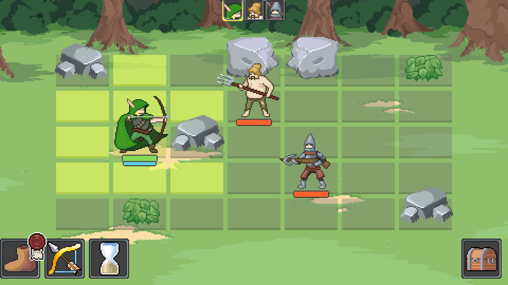
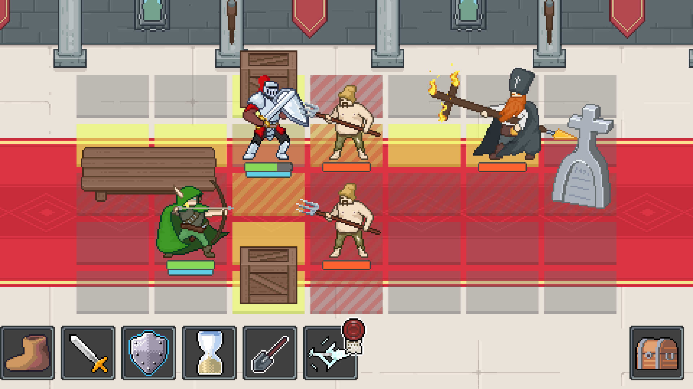
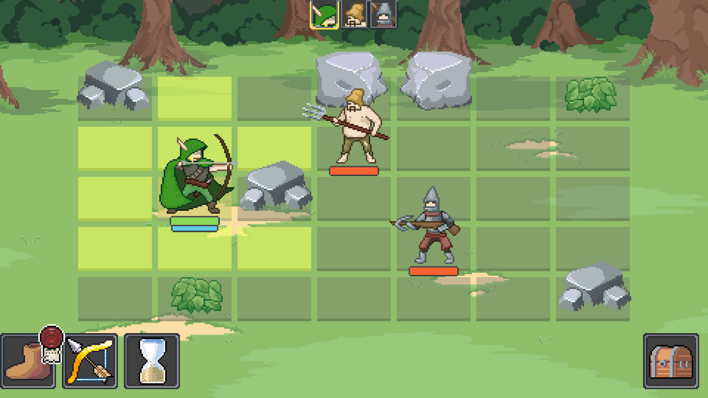
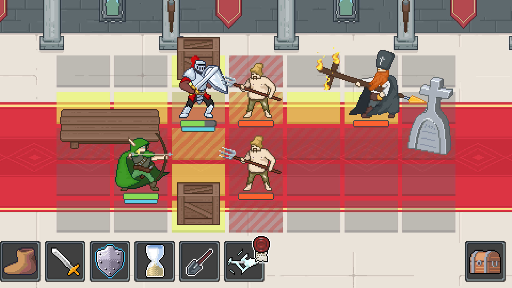


 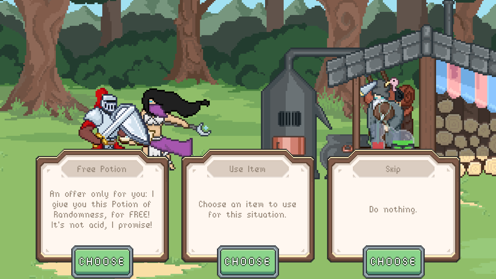
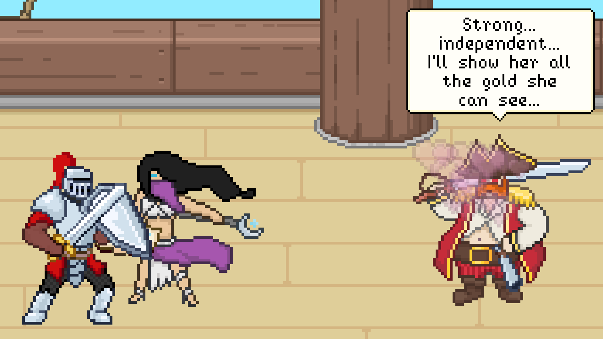
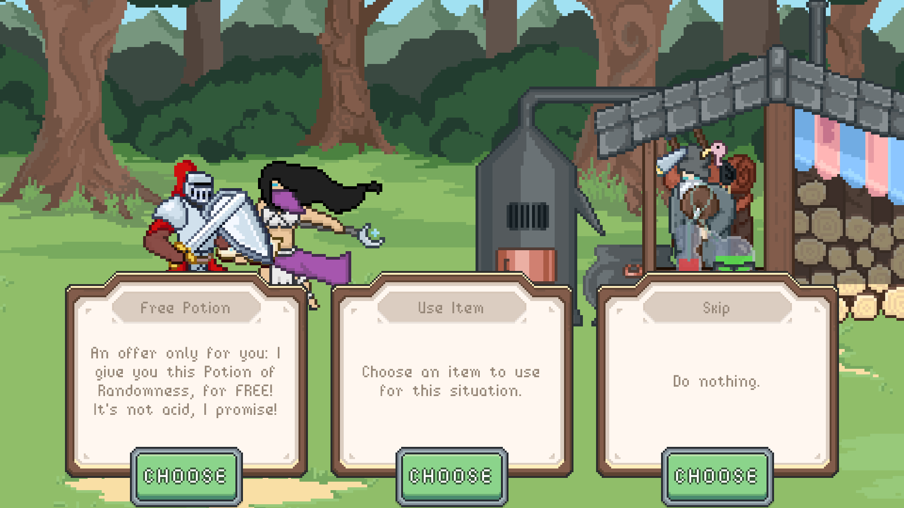
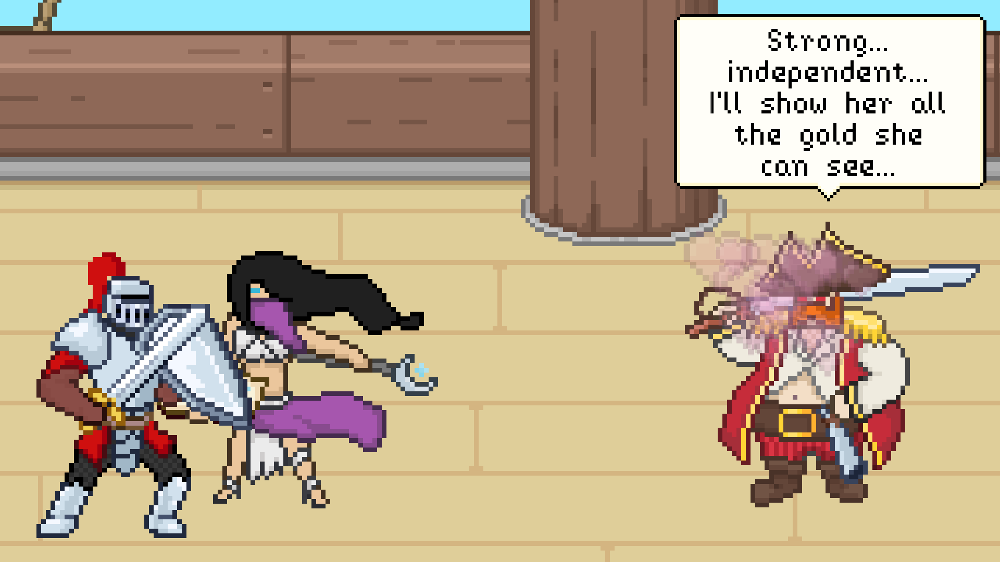


 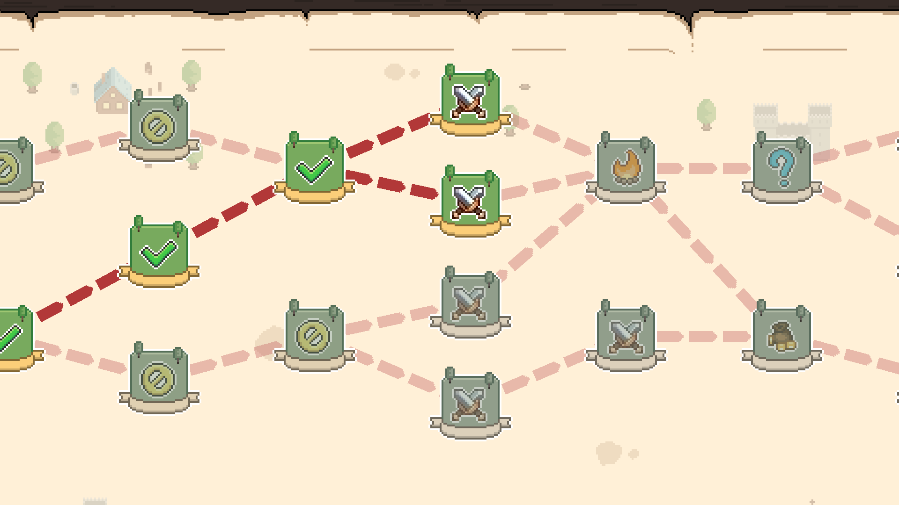
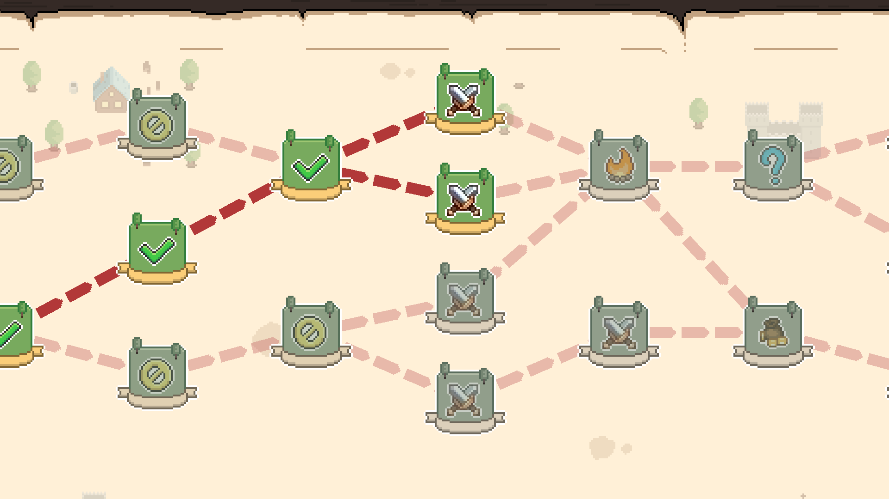
 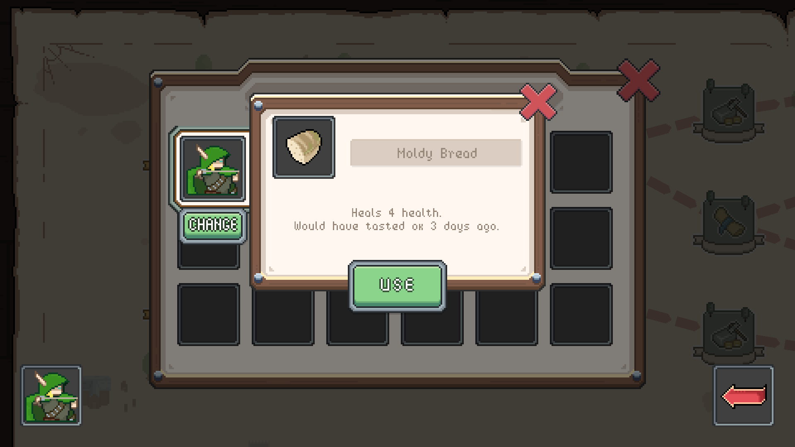
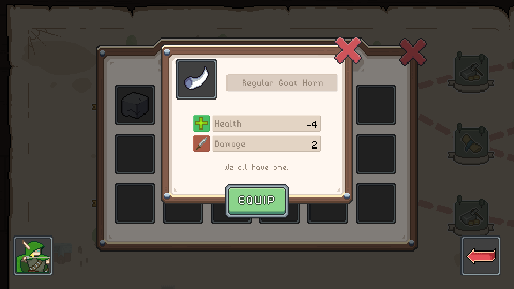
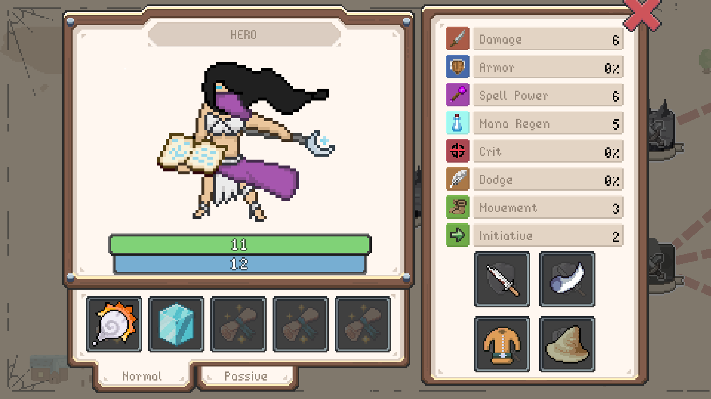
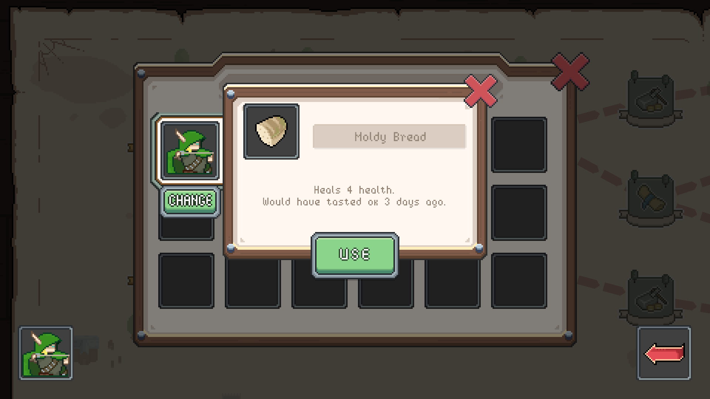
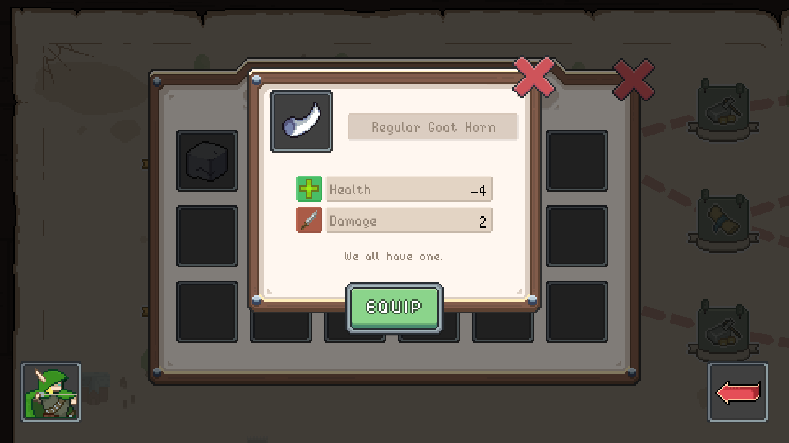
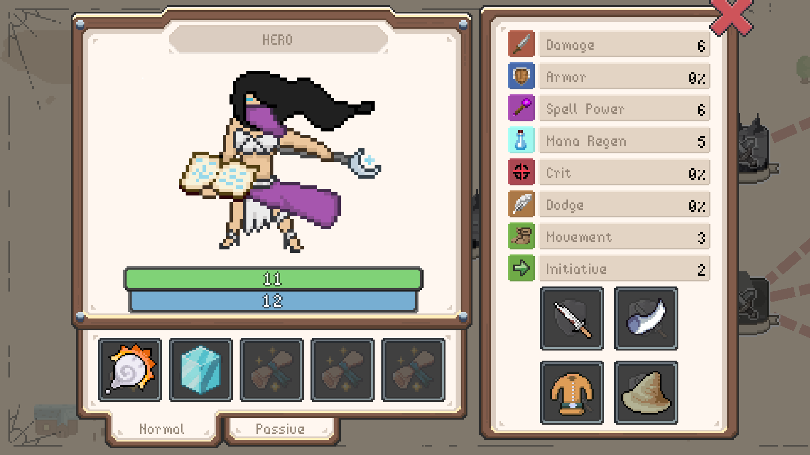